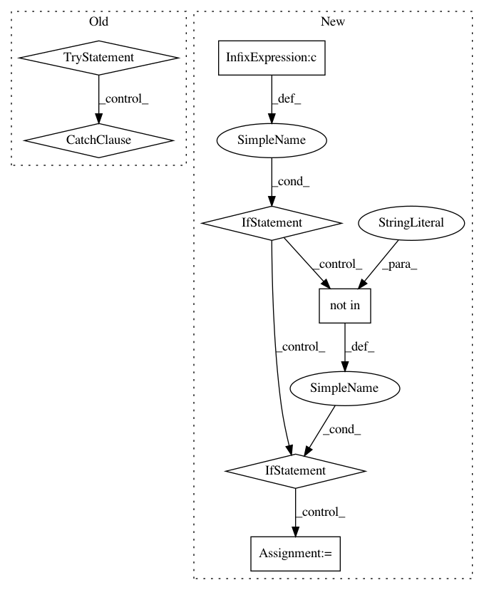

9a53bf54eef6cad69d223076b27f920a99432288,QUANTAXIS/QAMarket/QAMarket.py,QA_Market,warp_market,#QA_Market#Any#,81
Before Change
return self.engine[order.type](order, self.market_data, self.commission_fee_coeff)
def warp_market(self, order):
try:
return self.fetcher[order.type](code=order.code, start=order.datetime, end=order.datetime, format="json")[0]
except:
pass
def warp_order(self, order):
对order的封装
[description]
After Change
try:
data = self.fetcher[order.type](
code=order.code, start=order.datetime, end=order.datetime, format="json")[0]
if "vol" in data.keys() and "volume" not in data.keys():
data["vol"] = data["volume"]
elif "vol" in data.keys() and "volume" not in data.keys():
data["volume"] = data["vol"]
else:
pass
print(data)
return data
except Exception as e:
QA_util_log_info("MARKET_ENGING ERROR: {}".format(e))
In pattern: SUPERPATTERN
Frequency: 3
Non-data size: 7
Instances
Project Name: QUANTAXIS/QUANTAXIS
Commit Name: 9a53bf54eef6cad69d223076b27f920a99432288
Time: 2017-12-18
Author: yutiansut@qq.com
File Name: QUANTAXIS/QAMarket/QAMarket.py
Class Name: QA_Market
Method Name: warp_market
Project Name: A2Zadeh/CMU-MultimodalSDK
Commit Name: 1087ba3b4bf530f7b3e30042c4421bcf8067fad1
Time: 2018-07-17
Author: abagherz@cs.cmu.edu
File Name: mmsdk/mmdatasdk/computational_sequence/computational_sequence.py
Class Name: computational_sequence
Method Name: _initialize
Project Name: CamDavidsonPilon/lifelines
Commit Name: 21cec6ac2b1852e470a14ac5a333113a31e61034
Time: 2020-07-13
Author: cam.davidson.pilon@gmail.com
File Name: lifelines/fitters/__init__.py
Class Name: RegressionFitter
Method Name: _compute_central_values_of_raw_training_data